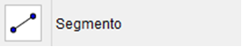
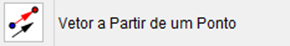
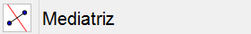

O GeoGebra é um sistema de geometria dinâmica e permite realizar construções tanto com pontos, vetores,segmentos, retas, secções cônicas como com funções que podem ser modificadas dinamicamente. Por outro lado, podemos inserir equações e coordenadas diretamente através de um campo específico para isso. Assim, o GeoGebra oferece a possibilidade de trabalhar com variáveis vinculadas a números, vetores e pontos, permitindo determinar derivadas e integrais de funções oferecendo um conjunto de comandos próprios da análise matemática. Estas duas perspectivas caracterizam o GeoGebra: uma expressão na janela algébrica corresponde-se com um objeto na janela de desenho gráficos e vice-versa.
Obs.: Na palavra grifada GeoGebra fazer o EFEITO TEXTO FLUTUANTE com o seguinte texto: GeoGebra é um software de matemática que reúne geometria, álgebra e cálculo. O seu autor é o professor Markus Hohenwarter da Universidade de Salzburg na Áustria.

Abaixo temos a janela inicial do GeoGebra 5.0 com a definição de suas principais partes.
Como estamos estudando apenas a parte geométrica do software, podemos fechar a janela de álgebra clicando no botão “X” no canto superior direito da janela de álgebra e também podemos retirar os eixos coordenados clicando com o botão direito do mouse sobre o eixo e na janela que aparecer clicar em “eixos”.
Primeiramente vamos nos familiarizar com a barra de ferramentas da geometria plana e em seguida veremos a barra de ferramentas da geometria espacial.
Cada ícone da barra de ferramentas tem seus próprios sub-icones e para visualizá-los basta clicar no canto inferior direito. O primeiro ícone é o mover que tem duas opções:
Esse ícone possibilita mover qualquer ponto, segmento, semirreta, reta, figura plana, figura espacialou função. Clique com o botão esquerdo do mouse sobre o que você quer mover, segure o botão e mova o que você selecionou para onde quiser na área de trabalho do GeoGebra.
A função desse ícone é parecida com o de cima, a única diferença é que você precisa escolher um ponto (que será como o centro de uma circunferência) e depois seguir o mesmo procedimento do ícone acima para mover a figura em modo de rotação com o ponto previamente selecionado como centro.
O segundo ícone na barra de ferramentas é o ponto. Nele temos 6 opções diferentes de ponto que são:
Assim que você clica em uma parte da área de trabalho vai aparecer um ponto como o da figura e caso a janela de álgebra esteja aberta também aparecerá as suas coordenadas.
Cria um ponto em um objeto (reta, figura, etc.). Para isso basta clicar sobre o objeto ao qual você deseja criar um ponto.
Se um ponto está fora do objeto, clique no ponto e após clique no objeto para vincular o ponto ao objeto. Se um ponto está sobre o objeto, clique no ponto para desvincular o ponto do objeto.

Quando dois objetos têm um ou mais pontos de interseção, clique nos dois objetos que automaticamente será (ão) marcado(s) o(s) ponto(s) de interseção.
Dados dois pontos, um segmento de reta, uma circunferência ou uma cônica, basta clicar sobre um desses objetos citados para criar o ponto médio (dois pontos, segmento de reta) ou centro (circunferência, cônica).
Ao clicar na área de trabalho cria um número complexo cujo suas coordenadas aparecem na janela de álgebra.
O próximo ícone da barra de ferramentas é destinado à reta e seus semelhantes.
Clique duas vezes (não coincidentes) e automaticamente uma reta será criada passando por esses dois pontos.

Parecido com o ícone de cima, a única diferença é que os dois pontos criados delimitam um segmento de reta.
O clique define a origem do segmento que será paralelo ao eixo das abscissas. Após o clique irá aparecer uma caixa onde você deverá digitar o tamanho desejado do segmento.
Parecido com os dois primeiros ícones dessa série, o primeiro clique define a origem e o segundo clique define a semirreta.
Você cria uma linha poligonal com quantos pontos você desejar. Para encerrar a linha poligonal basta clicar no primeiro ponto que criou. Se clicar em algum ponto que não seja o primeiro, irá exclui-lo da linha poligonal.
Cria um vetor onde a origem é o primeiro ponto e a outra extremidade do vetor é o segundo ponto.

Dado um vetor já criado, primeiro clique onde deseja criar um vetor e depois clique em um vetor para criar um vetor com mesmo módulo e direção do vetor selecionado.
O próximo ícone da barra de ferramenta é basicamente sobre posição relativa entre retas.
Tem duas maneiras de traçar uma reta perpendicular. Vou explicar traçando uma reta perpendicular a outra reta mas o mesmo vale para um segmento, semirreta ou vetor. A primeira maneira é clicar sobre uma reta e posicionar a perpendicular onde você desejar. A outra maneira é criando um ponto qualquer fora da reta e depois clicando sobre a reta. A perpendicular passará pelo ponto criado.
É similar ao ícone acima. Basta trocar “perpendicular” por “paralela”.

Selecione dois pontos ou um segmento e automaticamente será traçada a mediatriz.
Selecione 3 pontos ou duas retas e a bissetriz será traçada. No caso de selecionar os 3 pontos, a bissetriz irá passar pelo segundo ponto selecionado.
Primeiro selecione um ponto e depois selecione um círculo, uma cônica ou uma função e as retas tangentes serão traçadas.
Selecione primeiro um ponto ou uma reta e depois selecione um círculo ou uma cônica para traçar uma reta perpendicular à reta que contém o centro do círculo\ cônica selecionado.
Selecione pontos usando o retângulo de seleção clicando e segurando o botão esquerdo do mouse e arrastando até que o retângulo cubra todos os pontos aos quais você quer que seja traçada uma reta de regressão linear.
Selecione o ponto do lugar geométrico e depois, o ponto sobre o objeto e/ ou o controle deslizante.
Responsável:
Centro de Educação a Distância do Ceará - CED